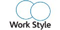
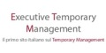
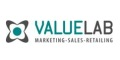
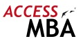
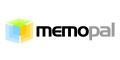
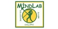

|
 |
 Economia
& Management è la rivista di direzione aziendale della SDA Bocconi
fondata da Claudio Dematté e pubblicata da Etas. Unica nel panorama
italiano, E&M rappresenta un ponte ideale tra l'attività manageriale e
l'evoluzione della ricerca e del sapere teorico. Economia
& Management è la rivista di direzione aziendale della SDA Bocconi
fondata da Claudio Dematté e pubblicata da Etas. Unica nel panorama
italiano, E&M rappresenta un ponte ideale tra l'attività manageriale e
l'evoluzione della ricerca e del sapere teorico.Uno strumento indispensabile per la formazione e l'aggiornamento
professionale, un "sistema editoriale" integrato che, accanto agli
autorevoli contributi proposti nella rivista offre un sito Internet
ricco di contenuti e servizi: anticipazioni, archivio degli articoli,
speciali monografici, segnalazioni librarie e risorse in rete, i
principali eventi e appuntamenti di interesse per il manager; una
newsletter quindicinale inviata a tutti gli iscritti alla community,
spazio di incontro sui temi più importanti per la vita delle imprese.
|
 EtasLab
è il catalogo online dei libri di management editi da
Etas. EtasLab
è il catalogo online dei libri di management editi da
Etas.
Con oltre 500 titoli, dai manuali di base agli strumenti operativi,
dai classici del pensiero economico alle nuove frontiere della cultura
d'impresa, la produzione Etas è in grado di soddisfare ogni esigenza di
formazione e di aggiornamento professionale nei settori dell'economia e
del management, del marketing e delle nuove tecnologie,
dell'organizzazione e della finanza.
Tra i contenuti esclusivi in continuo aggiornamento, il sito ospita
aree di approfondimento riservate ai possessori dei TwinBook, già in
vendita in libreria.
Per essere aggiornati sulle novità in uscita tramite il sito è
possibile iscriversi gratuitamente alla newsletter.
|
 Nielsen
Media Research è la fonte ufficiale per la misurazione degli
investimenti pubblicitari in Italia. I dati Nielsen sono strumenti
fondamentali per analisi di mercato e della concorrenza. Grazie ad un
costante aggiornamento del proprio approccio al mercato, Nielsen oggi è
in grado di misurare le attività di comunicazione su tutte le nuove
piattaforme. Inoltre, grazie alla sinergia sempre più stretta con le
altre divisioni di The Nielsen Company, Nielsen Media è in grado di
fornire dati e ricerche in diversi ambiti (internet, mobile, largo
consumo, ricerche ad Hoc). Nielsen
Media Research è la fonte ufficiale per la misurazione degli
investimenti pubblicitari in Italia. I dati Nielsen sono strumenti
fondamentali per analisi di mercato e della concorrenza. Grazie ad un
costante aggiornamento del proprio approccio al mercato, Nielsen oggi è
in grado di misurare le attività di comunicazione su tutte le nuove
piattaforme. Inoltre, grazie alla sinergia sempre più stretta con le
altre divisioni di The Nielsen Company, Nielsen Media è in grado di
fornire dati e ricerche in diversi ambiti (internet, mobile, largo
consumo, ricerche ad Hoc).
Website:
http://www.it.nielsen.com/products/nmr.shtml |
 Monster.it
è il portale Internet leader nella ricerca e offerta di lavoro on line. Monster.it
è il portale Internet leader nella ricerca e offerta di lavoro on line.
Dal 2001 rappresenta un punto d’incontro efficace tra candidati e
Responsabili delle Risorse Umane. Monster.it fa parte del Network
Monster, punto di riferimento mondiale nel recruiting on line, ed è una
divisione di Monster Worldwide, una delle più grandi società al mondo di
consulenza per la ricerca, selezione e valorizzazione delle risorse
umane.
Monster Italia è iscritta all’Albo delle Agenzie per il Lavoro - Sezione
IV - Autorizzazione Ministeriale Definitiva - Protocollo n. 4393 -
12/02/2007. |
Fondata
nel 1955, la
FrancoAngeli ha creato in Italia l’editoria aziendale e ancora oggi
mantiene in quest’ambito un ruolo primario. Il suo catalogo - che
annovera in questo comparto oltre un migliaio di titoli e circa 80
novità l’anno - è la testimonianza più efficace di tale primato. Una
biblioteca ricchissima di strumenti aggiornati in tutte le aree e
funzioni dell’impresa: dal marketing alla produzione, dalla finanza alla
gestione del personale, dalla logistica agli approvvigionamenti... Ed
ancora manuali di autoformazione su tutte le abilità manageriali: dalle
tecniche di negoziazione a quelle decisionali, dal time management al
public speaking, dalla creatività alla memoria...
Website:
www.francoangeli.it
|
 Egea, casa editrice dell’Università Bocconi, documenta e diffonde la
cultura economico-manageriale elaborata in ambito universitario, Egea, casa editrice dell’Università Bocconi, documenta e diffonde la
cultura economico-manageriale elaborata in ambito universitario,
mette a disposizione del mondo dello studio, delle professioni, delle
imprese e del lavoro efficaci strumenti di cultura e aggiornamento.
Attraverso il bookshop online offre i titoli disponibili e ordinabili
nella Libreria Egea italiani e internazionali .
E’ attivo il Servizio Novità, di aggiornamento sulle novità editoriali
di argomenti selezionati dal cliente, che può usufruire di promozioni
esclusive.
Per saperne di più:
libreria@egeaonline.com o 02 5836 5754.
|
IDC
è leader mondiale nell’ambito della ricerca di mercato, dei servizi di
consulenza e degli eventi nei settori dell’information technology, delle
telecomunicazioni e della tecnologia consumer. IDC aiuta i
professionisti IT, i dirigenti aziendali e la community degli
investitori a prendere decisioni sugli acquisti e sulla strategia di
business nell'area tecnologica sulla base di elementi concreti e di
fatto. Oltre 1000 analisti IDC in 110 paesi forniscono a livello
globale, regionale e locale la propria esperienza sulle opportunità e
sulle tendenze della tecnologia e del mercato. Per oltre 43 anni, IDC ha
fornito analisi strategiche per aiutare i propri clienti a raggiungere i
loro principali obiettivi di business. IDC è una società del gruppo IDG,
realtà leader mondiale nel settore dell’editoria, della ricerca e degli
eventi in ambito tecnologico.
Si possono avere maggiori informazioni su IDC visitando il sito
www.idc.com |
theworkstylemagazine.com si interessa alle evoluzioni del mondo del lavoro. Distribuito in trenta Paesi organizza eventi su temi mirati come l’identità, l’environment, le emozioni, l’architettura e l’organizzazione del lavoro. (workstyletalking.com). Work style ospita articoli in lingua inglese di autori internazionali su un prodotto attento al taglio grafico e all’illustrazione. Allegate al magazine, vengono distribuite le guide sulle middle sized cities in cui lavorare del progetto 100workcities.com.
Work Style è disponibile su abbonamento e in edicola in Europa e negli Stati Uniti.
|
Business
International è una società di informazione, formazione e collegata
al gruppo The Economist. Alle attività di supporto alle imprese,
Business International affianca attività dirette al rafforzamento del
rapporto tra aziende e istituzioni Centrali e Locali al fine di favorire
lo sviluppo del business environment italiano.
Vanta un'esperienza consolidata nell'ideazione e realizzazione di
eventi istituzionali e di management. Le conferenze - alcune organizzate
in partnership con The Economist - rappresentano occasioni esclusive di
aggiornamento continuo e di confronto per i top manager.
Website:
www.biweb.it
|
 AISM
- Associazione Italiana Marketing è l'Associazione senza fini di lucro
che per prima in Italia si è impegnata a sviluppare e promuovere la
cultura e la professionalità del Marketing. AISM
- Associazione Italiana Marketing è l'Associazione senza fini di lucro
che per prima in Italia si è impegnata a sviluppare e promuovere la
cultura e la professionalità del Marketing.Fondata nel 1954 da
Guglielmo Tagliacarne, precursore delle ricerche sul modo di pensare e
di vivere dei consumatori, nel corso degli anni AISM è diventata il
principale punto di riferimento per gli Imprenditori, i Docenti
Universitari, i Manager, i Consulenti e Ricercatori che si occupano di
Marketing in Italia.
AISM opera per lo sviluppo e la diffusione della cultura di Marketing
e delle molteplici tecniche connesse organizzando Seminari, Convegni,
Incontri e Studi. |
Captha
è una società specializzata nel Banking e nel Finance e collabora con
grandi Banche d'Investimento per offrire servizi di Advisory alle Banche
e alle Istituzioni Finanziarie in Italia. Captha si pone nel mondo della
formazione come "centro di competenza" nel Banking e nel Finance,
attorno al quale far nascere una serie di opportunità ed iniziative, tra
le quali Master in Banca e Finanza. Captha propone, inoltre, una serie
di iniziative volte ad avvicinare i giovani al mondo della Banca e della
Finanza: business game, guide di approfondimento, offerte di lavoro (in
collaborazione con www.efinancialcareers.it), financial business
networking (attraverso l’utilizzo di www.labyring.com, business network
specializzato nel finance).
Website: www.captha.it
|
Executive
Temporary Management, è il primo sito italiano sul tema, creato da
ISTUD e Temporary Management & Capital Advisors. Si propone di creare
una learning community professionale, per aumentare la conoscenza dello
strumento tra i manager e le aziende, operando: con il Chapter italiano
di IIM – Institute of Interim Management su un intenso programma di
aggiornamento gratuito (workshop brevi e convegni ad ampio respiro) in
collaborazione associazioni manageriali, imprenditoriali e accademiche,
oltre che con interventi in percorsi formativi strutturati; con numerosi
Media Partner per aumentare la diffusione del messaggio.Website:
www.temporary-management.com
|
Promos,
Azienda Speciale della Camera di Commercio di Milano per lo sviluppo
delle attività internazionali, promuove l’inserimento nei mercati
stranieri delle aziende milanesi e lombarde. La sua attività si sviluppa
su due pilastri: network con enti, istituzioni, agenzie governative
internazionali, rappresentanze di interessi e categorie presenti sul
territorio, e strategie efficaci di marketing territoriale – di cui
www.investinmilan.com è uno strumento fondamentale – finalizzate al
potenziamento dell’attrattività del sistema produttivo lombardo, in
particolare sull’organizzazione e la comunicazione di grandi eventi,
come EXPO 2015, finalizzati al potenziamento della ricettività degli
investimenti.Website:
www.promos-milano.it
|
 Marcus
Evans è il principale produttore di conferenze noto per il suo
operato in diversi segmenti dell’industria. Marcus
Evans è il principale produttore di conferenze noto per il suo
operato in diversi segmenti dell’industria.
Marcus Evans realizza conferenze di altissima qualità strutturate per
andare incontro alle richieste di un'industria in continua evoluzione,
per rispondere ai cambiamenti del settore e alle più pressanti esigenze
dei principali attori dell’industria.
Le nostre conferenze vengono studiate da professionisti altamente
competenti su un ampio campione di organizzazioni internazionali, di
blue chips, istituti di ricerca universitaria, enti governativi,
business innovativi e altre fonti industriali di punta.
Progettate per soddisfare le richieste di quadri e dirigenti, le
nostre conferenze offrono un'opportunità unica: acquisire competenze e
know-how sugli ultimissimi trend del mercato ascoltando eminenti esperti
e al contempo intrecciare rapporti interagendo in un ambiente altamente
stimolante.
|
 Italia
Convention è il portale di marketing e di
informazione leader nel settore del congressuale. Italia
Convention è il portale di marketing e di
informazione leader nel settore del congressuale.
La sua missione è di avvicinare il mondo e la cultura del congressuale a
quello delle Aziende utilizzatrici (committenti) valorizzando tutti gli
attori (sedi e servizi) con informazioni commerciali, di cultura
professionale, e con attività di marketing attivo.
Il suo target di lettura è costituito da:
- manager d'Azienda, soprattutto event manager, uomini marketing e
comunicazione, HR, ma anche imprenditori e alti dirigenti;
- operatori e professionisti del congressuale, soprattutto PCO e agenzie
organizzatrici.
Italia Convention è strutturato con:
- il magazine con articoli scritti da professionisti del congressuale
- la directory con schede dettagliate di sedi e di aziende di servizi
- le iniziative di marketing per potenziare la comunicazione degli
inserzionisti
- la newsletter inviata mensilmente a oltre 100.000 lettori.
|
InformaAzione,
società di formazione con sede a Bastia Umbra (Perugia), ha sviluppato
conoscenze specialistiche nell’arco di oltre dieci anni di attività
offrendo soluzioni nell’ambito della formazione e della consulenza
grazie a una gamma completa di servizi, corsi, seminari e master. La
mission di InformaAzione è mettere i propri clienti nelle migliori
condizioni per organizzare le proprie conoscenze ed esperienze a
vantaggio di una visione d'insieme dinamica e sostenibile.
|
B
& C... tra il sapere e il fare. Società di ricerca di marketing
fondata nel 1975, che opera sul mercato nazionale ed internazionale come
solido raccordo tra aziende e mercato. Vanta una consolidata expertise
nell'utilizzazione delle più accreditate metodologie di ricerche
quali-quantitative come supporto all'ottimizzazione delle strategie di
marketing. Professionalità e creatività applicate sui nostri principali
prodotti: Mistery shopping, Customer Satisfaction Analysis, Omnibus
research, Demand Analysis, Studi di Settore ad-hoc, Piattaforme
d'internazionalizzazione per i principali mercati emergenti (Cina,
India, Mercosur)
Email: info@bec.mkt.com
|
AchieveGlobal
(Italia) è la branch italiana del Gruppo AchieveGlobal, network con 70
uffici operativi in 40 Paesi. AchieveGlobal è oggi controllata da
INFORMA, società inglese di business information e performance
improvement, quotata al London Stock Exchange. La mission di
AchieveGlobal è assistere le organizzazioni a raggiungere i risultati di
business con l’accelerazione della crescita professionale delle persone
all’interno di (nuovi) processi efficaci. La dimensione internazionale
consente di attingere a esperienze, ricerche e studi realizzati dal
Gruppo a livello mondiale.
AchieveGlobal (Italia) propone servizi in due aree principali:
Formazione nell’ambito Leadership, Sales Performance, Customer Service,
Learning Organization; Consulenza e Change Management: supporto
strategico, ridefinizione dell’organizzazione aziendale e dei suoi
processi chiave, miglioramento dei sistemi di sviluppo HR in ottica
integrata.
Achieve Italia – certificata ISO 9001 dal 1998 – collabora con aziende
che operano in tutti i settori economici.
|
VALUE
LAB una società di consulenza di management e IT solutions,
specializzata nelle aree di Marketing, CRM, Vendite e Retail. Integra
competenze di management, approcci di Geomarketing, tecniche di Data
Mining, conoscenza e utilizzo di fonti informative e basi dati, utilizzo
mirato dell’Information Technology. La sua mission è supportare le
aziende ad aumentare i ricavi, ridurre i rischi e ottimizzare i costi
migliorando le scelte strategiche e la gestione operativa di Mercati,
Clienti, Punti di vendita. L’ottica è spiccatamente quantitativa,
integrata con la sensibilità data dall’esperienza. I prodotti e servizi
di VALUE LAB sono adottati con successo nel mercato italiano ed europeo
da imprese ad alte performance. Periodicamente VALUE LAB cura percorsi
formativi sui propri temi ed expertise.
Website:
www.valuelab.it |
 Knowità
si distingue nel campo della formazione professionale, dell’editoria,
degli eventi di settore e del networking, attraverso l’eccellenza dei
contenuti e l’adozione di modalità innovative. Knowità
si distingue nel campo della formazione professionale, dell’editoria,
degli eventi di settore e del networking, attraverso l’eccellenza dei
contenuti e l’adozione di modalità innovative.
In Knowità siamo fermamente convinti che per competere nell’era della
conoscenza non sia possibile prescindere dall’innovazione.
In tal senso, oltre a garantire un alto livello dei contenuti,
offriamo ai nostri “knowledge workers” anche quel “Plus+” che oggi più
di ieri costituisce un valore aggiunto indiscutibile. |
 QS
è un autorevole consulente internazionale per la formazione e lo
sviluppo professionale. QS
è un autorevole consulente internazionale per la formazione e lo
sviluppo professionale.
QS mette in comunicazione le comunità dei laureati, degli studenti MBA e
degli executive manager con i reclutatori e gli educatori attraverso i
suoi siti internet e pubblicazioni.
Organizza eventi mondiali quali il QS World MBA Tour, il QS World Grad
School Tour, e vari Leadership Forums, specializzati rispettivamente in
MBA, master, dottorati internazionali e career advice.
QS Research produce rapporti annuali sulle ultime tendenze nel settore
universitario, delle business school e del mondo del lavoro. |
Advent
Group is specialized in event organization, especially for prospective
executive candidates. It brings together different players in the
education market: potential students, universities, media and corporate
recruitment offices. With the brand name
ACCESS MBA, the
agency is today one of the most active players in the human resources
field, organizing high-quality events across Europe and Middle East.
With an international flair, Advent excels in tackling cross-cultural
issues as well as in its capacity to adapt services to suit a major
event or a custom presentation.
More information on
www.accessmba.com |
Osservatorio Scenari Internazionali (OSI), è un’associazione
no-profit attiva dal 2002 nel campo dell’analisi geopolitica.Ne fanno
parte studiosi e docenti di storia, economia e politica internazionale,
giornalisti e professionisti.
L'Osservatorio organizza seminari, convegni, presentazioni di volumi
e pubblica contributi e analisi sul sito www.scenarinternazionali.org.
Aree e tematiche di interesse privilegiato sono: le politiche
dell’Unione Europea, i Paesi del Caucaso e dell’Asia Centrale, la
cooperazione allo sviluppo, il rapporto tra globalizzazione e
regionalismo. |
Memopal
è una startup europea con un management orientato all'innovazione e con
un track record di successo nel mondo dell'e-business e dell'industria.
L'azienda è finanziata da business angels con un round di investimento
iniziale di circa 1 milione di dollari.
La nostra vision è global. Lavoriamo per creare un prodotto semplice in
grado di soddisfare sia il mercato consumer che corporate.
La mission di Memopal è preservare ed organizzare la cultura digitale.
Siamo convinti che il mondo avrà sempre più bisogno di uno strumento per
archiviare l'informazione digitale in maniera più sicura ed economica.
Website:
www.memopal.com |
 Il
Portale per la Promozione della Cultura d’Impresa è un progetto della
Business World
società di Consulenza e Formazione impegnata nel supportare le aziende
nel loro delicato processo di sviluppo. Il
Portale per la Promozione della Cultura d’Impresa è un progetto della
Business World
società di Consulenza e Formazione impegnata nel supportare le aziende
nel loro delicato processo di sviluppo.
L'obiettivo del progetto è raccogliere opinioni, informazioni, novità
nei diversi ambiti del Marketing Management collaborando in sinergia con
quanti condividono lo studio e l'approfondimento dei temi correlati.
I Focus principali riguardano il Marketing e la Comunicazione, la
Formazione Tradizionale, l'Internazionalizzazione ma anche lo Sviluppo
Organizzativo e la crescita delle Risorse Umane. L'area News riporta gli
avvenimenti di maggior rilievo nella panoramica delle opportunità di
aggiornamento ed informazione nazionale ed internazionale.
|
Key4biz
è un portale dedicato ai grandi temi della convergenza tecnologica in
Italia e nel mondo. E’ uno strumento di informazione e conoscenza delle
dinamiche della comunicazione elettronica, orientato alle strategie e
agli aspetti di carattere economico, industriale, di consumo e di policy.
Key4biz è innanzitutto un quotidiano d’informazione online su
Telecomunicazioni, Media e Internet, che offre informazione, prodotti e
servizi sia gratuiti che a pagamento: notizie del giorno, analisi
d’approfondimento, profili societari, grafici e tabelle, reports e
recensioni, documenti e presentazioni, directory dei manager e delle
aziende, archivi news, ecc.
Key4biz nasce nel 2002 per iniziativa di Pegaso Uno,
Cooperativa Sociale – Onlus, fornitrice di contenuti per imprese,
editoria e P.A.
|
|
 Spazio
Impresa è un progetto Made nato agli inizi del 2004 con l'obiettivo
di promuovere la cultura imprenditoriale, mettere in contatto le aziende
che operano in settori e aree geografiche differenti, creare community e
sviluppare nuove opportunità di business. Spazio
Impresa è un progetto Made nato agli inizi del 2004 con l'obiettivo
di promuovere la cultura imprenditoriale, mettere in contatto le aziende
che operano in settori e aree geografiche differenti, creare community e
sviluppare nuove opportunità di business.
Oggi Spazio Impresa è:
|
 In
pubblicità le idee hanno uno scopo preciso: colpire nel segno! In
pubblicità le idee hanno uno scopo preciso: colpire nel segno!
Alla base di ogni campagna pubblicitaria vincente c’è sempre una buona
idea.
E le buone idee non sono il frutto dell’improvvisazione, ma il
risultato di un delicato processo che vede intervenire continuamente
estro e logica,
immaginazione e deduzione, fantasia e rigore.
Ecco perché gli imprenditori continuano a sceglierci.
Ecco perché in CPL la Creatività è considerata una Scienza Esatta.
Grazie a questo metodo di lavoro, il 95% delle aziende che hanno
lavorato con CPL, l’hanno nuovamente interpellata.
|
|
Mindlab
nasce nel 2000 da un'idea di Barbara Principi e Gilberto Visintin. Nel
tempo siamo diventati un gruppo di professionisti che provengono da
esperienze maturate nelle risorse umane e nella comunicazione di aziende
multinazionali e che convergono su un obiettivo comune: lo sviluppo
delle potenzialità e del benessere delle organizzazioni e delle persone
attraverso l'espressione del proprio potenziale. Mindlab offre servizi
di consulenza nelle risorse umane, nella formazione e nella video
comunicazione.
|
 Reti
di valore. Più che un progetto, la continuazione di una
presenza in rete che dura da anni finalizzata al networking
professionale. Punto di partenza è il network di amici, colleghi,
professional e manager d'azienda incontrati in rete grazie al progetto
Complexlab co-fondato alla fine del 2005 da
Carlo Mazzucchelli. Il
progetto è stato fucina di nuove sollecitazioni e idee, palestra e luogo
di incontro con persone e personalità ricche di esperienza, di
conoscenze e di capacità professionali. Reti
di valore. Più che un progetto, la continuazione di una
presenza in rete che dura da anni finalizzata al networking
professionale. Punto di partenza è il network di amici, colleghi,
professional e manager d'azienda incontrati in rete grazie al progetto
Complexlab co-fondato alla fine del 2005 da
Carlo Mazzucchelli. Il
progetto è stato fucina di nuove sollecitazioni e idee, palestra e luogo
di incontro con persone e personalità ricche di esperienza, di
conoscenze e di capacità professionali.
|
|
Con
6 uffici in tutto il mondo e più di 150 dipendenti di 28 nazionalità
differenti, naseba produce,
organizza e commercializza eventi B2B, congressi, conferenze e forum di
alto livello, con l’obiettivo di accrescere le competenze, sviluppare il
networking e favorire le opportunità di business.
I nostri eventi sono strategicamente progettati per soddisfare
esigenze e richieste di executive di alto livello, promuovendo la
condivisione delle conoscenze e delle esperienze.
Lavorando a stretto contatto con ciascun partner, naseba
si propone di fornire ai propri clienti il più alto riscontro diretto in
termini di investimento.
A naseba sappiamo che “il
successo è una scelta” (“success is a choice”).
|
 Siamo un’agenzia specializzata nell'organizzazione di soluzioni originali, accattivanti ed esclusive per viaggi d'incentivazione, meeting e attività di team building. Ad aziende e associazioni garantiamo una consulenza qualificata che deriva da 15 anni di esperienza sul territorio. Le nostre attività di team building sono format originali creati insieme a professionisti nell’area della formazione e della comunicazione. Nell'ambito dell’accoglienza turistica, proponiamo soggiorni in dimore storiche e borghi ristrutturati di indiscutibile atmosfera; vantiamo un ‘ampia selezione di proprietà private ‘chiuse’, locations non convenzionali per eventi aziendali di qualsiasi tipo.
Siamo punto di riferimento per tutte quelle aziende che cercano un partner attento ed un
soggiorno non ordinario, dove nulla è lasciato al caso, ma curato secondo un'efficace fusione tra la
migliore tradizione dell'ospitalità mediterranea e nuovi modelli di know-how contemporaneo. Siamo un’agenzia specializzata nell'organizzazione di soluzioni originali, accattivanti ed esclusive per viaggi d'incentivazione, meeting e attività di team building. Ad aziende e associazioni garantiamo una consulenza qualificata che deriva da 15 anni di esperienza sul territorio. Le nostre attività di team building sono format originali creati insieme a professionisti nell’area della formazione e della comunicazione. Nell'ambito dell’accoglienza turistica, proponiamo soggiorni in dimore storiche e borghi ristrutturati di indiscutibile atmosfera; vantiamo un ‘ampia selezione di proprietà private ‘chiuse’, locations non convenzionali per eventi aziendali di qualsiasi tipo.
Siamo punto di riferimento per tutte quelle aziende che cercano un partner attento ed un
soggiorno non ordinario, dove nulla è lasciato al caso, ma curato secondo un'efficace fusione tra la
migliore tradizione dell'ospitalità mediterranea e nuovi modelli di know-how contemporaneo.
Website:
www.jetevents.it
|
|
|
|
|